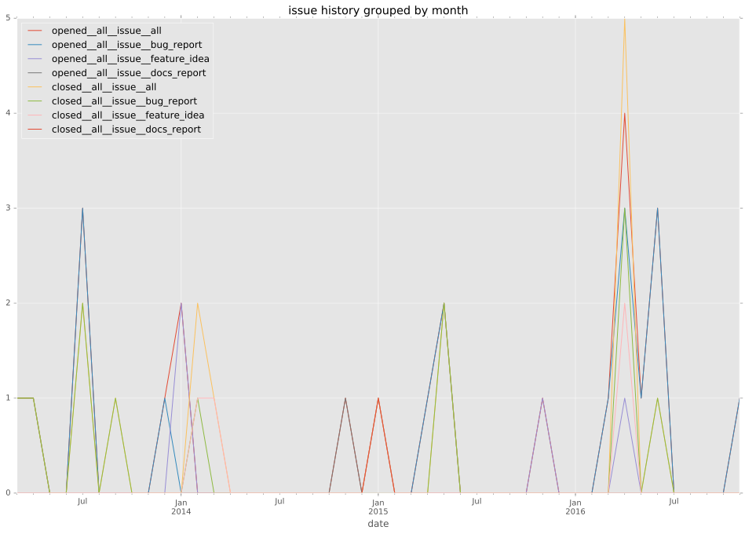
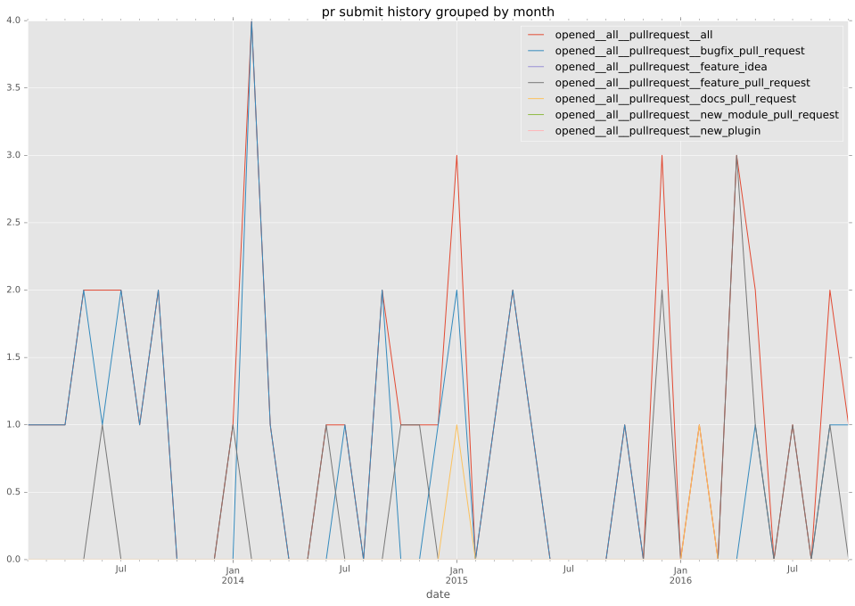
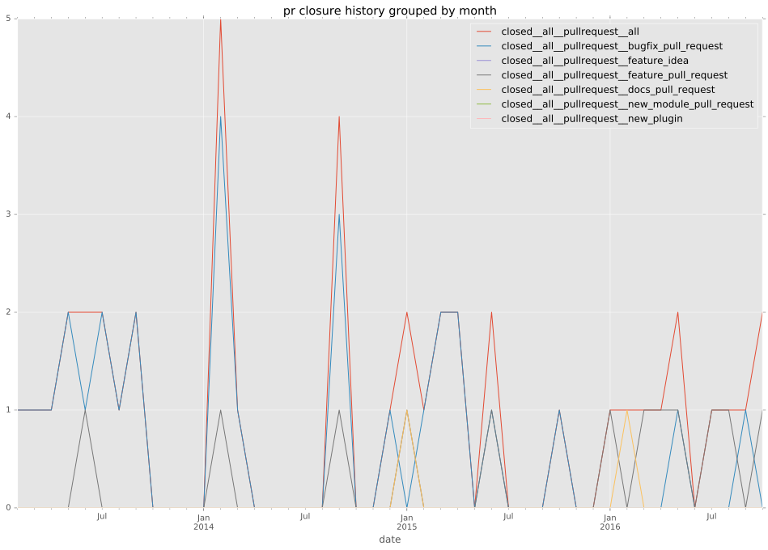
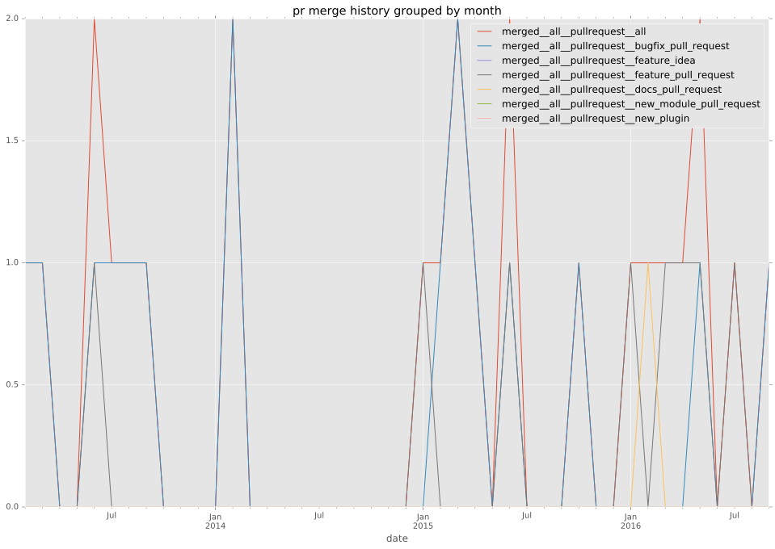

authors
- jhoekx
- abulimov
maintainers
- jhoekx
- abulimov
contributors
- jhoekx : 28 commits
- jonasvermeulen : 16 commits
- srvg : 13 commits
- risaacson : 12 commits
- dagwieers : 10 commits
- encbladexp : 7 commits
- jpmens : 6 commits
- Yannig : 6 commits
- DavidWittman : 6 commits
- fdupoux : 5 commits
- chrrrles : 5 commits
- alxgu : 4 commits
- bcoca : 3 commits
- p53 : 2 commits
- mattclay : 2 commits
- jimi-c : 2 commits
- jctanner : 2 commits
- abadger : 1 commits
total issue counts
unknown: 1
bugfix pull request: 28
docs report: 1
pullrequest: 45
docs pull request: 2
feature pull request: 14
feature idea: 5
issue: 23
bug report: 17
issue history

pullrequest history



days open by issue type
feature pull request
count: 20
std: 66.3599435297
min: 3
max: 223
median: 36.5
mean: 63.2
all
count: 84
std: 44.8871265599
min: 0
max: 223
median: 2.0
mean: 24.9642857143
pullrequest
count: 0
std: nan
min: nan
max: nan
median: nan
mean: nan
docs pull request
count: 3
std: 1.73205080757
min: 1
max: 4
median: 1.0
mean: 2.0
docs report
count: 1
std: nan
min: 54
max: 54
median: 54.0
mean: 54.0
bugfix pull request
count: 44
std: 17.8579519599
min: 0
max: 66
median: 0.0
mean: 7.97727272727
feature idea
count: 4
std: 63.4376334153
min: 14
max: 150
median: 37.0
mean: 59.5
issue
count: 0
std: nan
min: nan
max: nan
median: nan
mean: nan
bug report
count: 12
std: 26.158027912
min: 0
max: 82
median: 1.0
mean: 15.3333333333
closures grouped by total days open